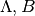

Create a new coordinate class (for the Sagittarius stream)¶
This document describes in detail how to subclass and define a custom spherical
coordinate frame, as discussed in Defining a New Frame and the
docstring for BaseCoordinateFrame. In this example, we
will define a coordinate system defined by the plane of orbit of the Sagittarius
Dwarf Galaxy (hereafter Sgr; as defined in Majewski et al. 2003). The Sgr
coordinate system is often referred to in terms of two angular coordinates,
.
To do this, wee need to define a subclass of
BaseCoordinateFrame that knows the names and units of the
coordinate system angles in each of the supported representations. In this case
we support SphericalRepresentation with “Lambda” and
“Beta”. Then we have to define the transformation from this coordinate system to
some other built-in system. Here we will use Galactic coordinates, represented
by the Galactic class.
See Also¶
- Majewski et al. 2003, “A Two Micron All Sky Survey View of the Sagittarius Dwarf Galaxy. I. Morphology of the Sagittarius Core and Tidal Arms”, http://arxiv.org/abs/astro-ph/0304198
- Law & Majewski 2010, “The Sagittarius Dwarf Galaxy: A Model for Evolution in a Triaxial Milky Way Halo”, http://arxiv.org/abs/1003.1132
- David Law’s Sgr info page http://www.stsci.edu/~dlaw/Sgr/
By: Adrian Price-Whelan, Erik Tollerud
License: BSD
Make print work the same in all versions of Python, set up numpy,
matplotlib, and use a nicer set of plot parameters:
from __future__ import print_function
import numpy as np
import matplotlib.pyplot as plt
from astropy.visualization import astropy_mpl_style
plt.style.use(astropy_mpl_style)
Import the packages necessary for coordinates
from astropy.coordinates import frame_transform_graph
from astropy.coordinates.matrix_utilities import rotation_matrix, matrix_product, matrix_transpose
import astropy.coordinates as coord
import astropy.units as u
The first step is to create a new class, which we’ll call
Sagittarius and make it a subclass of
BaseCoordinateFrame:
class Sagittarius(coord.BaseCoordinateFrame):
"""
A Heliocentric spherical coordinate system defined by the orbit
of the Sagittarius dwarf galaxy, as described in
http://adsabs.harvard.edu/abs/2003ApJ...599.1082M
and further explained in
http://www.stsci.edu/~dlaw/Sgr/.
Parameters
----------
representation : `BaseRepresentation` or None
A representation object or None to have no data (or use the other keywords)
Lambda : `Angle`, optional, must be keyword
The longitude-like angle corresponding to Sagittarius' orbit.
Beta : `Angle`, optional, must be keyword
The latitude-like angle corresponding to Sagittarius' orbit.
distance : `Quantity`, optional, must be keyword
The Distance for this object along the line-of-sight.
"""
default_representation = coord.SphericalRepresentation
frame_specific_representation_info = {
'spherical': [coord.RepresentationMapping('lon', 'Lambda'),
coord.RepresentationMapping('lat', 'Beta'),
coord.RepresentationMapping('distance', 'distance')],
'unitspherical': [coord.RepresentationMapping('lon', 'Lambda'),
coord.RepresentationMapping('lat', 'Beta')]
}
Breaking this down line-by-line, we define the class as a subclass of
BaseCoordinateFrame. Then we include a descriptive
docstring. The final lines are class-level attributes that specify the
default representation for the data and mappings from the attribute names used
by representation objects to the names that are to be used by Sagittarius.
In this case we override the names in the spherical representations but don’t
do anything with other representations like cartesian or cylindrical.
Next we have to define the transformation from this coordinate system to some
other built-in coordinate system; we will use Galactic coordinates. We can do
this by defining functions that return transformation matrices, or by simply
defining a function that accepts a coordinate and returns a new coordinate in
the new system. We’ll start by constructing the transformation matrix using
pre-deteremined Euler angles and the rotation_matrix helper function
since both systems are Heliocentric:
SGR_PHI = (180 + 3.75) * u.degree # Euler angles (from Law & Majewski 2010)
SGR_THETA = (90 - 13.46) * u.degree
SGR_PSI = (180 + 14.111534) * u.degree
# Generate the rotation matrix using the x-convention (see Goldstein)
D = rotation_matrix(SGR_PHI, "z")
C = rotation_matrix(SGR_THETA, "x")
B = rotation_matrix(SGR_PSI, "z")
A = np.diag([1.,1.,-1.])
SGR_MATRIX = matrix_product(A, B, C, D)
Since we already constructed the transformation (rotation) matrix above, and the inverse of a rotation matrix is just its transpose, the required transformation functions are very simple:
@frame_transform_graph.transform(coord.StaticMatrixTransform, coord.Galactic, Sagittarius)
def galactic_to_sgr():
""" Compute the transformation matrix from Galactic spherical to
heliocentric Sgr coordinates.
"""
return SGR_MATRIX
The decorator @frame_transform_graph.transform(coord.StaticMatrixTransform,
coord.Galactic, Sagittarius) registers this function on the
frame_transform_graph as a coordinate transformation. Inside the function,
we simply return the previously defined rotation matrix.
We then register the inverse transformation by using the transpose of the rotation matrix (which is faster to compute than the inverse):
@frame_transform_graph.transform(coord.StaticMatrixTransform, Sagittarius, coord.Galactic)
def sgr_to_galactic():
""" Compute the transformation matrix from heliocentric Sgr coordinates to
spherical Galactic.
"""
return matrix_transpose(SGR_MATRIX)
Now that we’ve registered these transformations between Sagittarius and
Galactic, we can transform between any coordinate
system and Sagittarius (as long as the other system has a path to
transform to Galactic). For example, to transform from
ICRS coordinates to Sagittarius, we simply:
icrs = coord.ICRS(280.161732*u.degree, 11.91934*u.degree)
sgr = icrs.transform_to(Sagittarius)
print(sgr)
Out:
<Sagittarius Coordinate: (Lambda, Beta) in deg
( 346.81830652, -39.28360407)>
Or, to transform from the Sagittarius frame to ICRS coordinates (in this
case, a line along the Sagittarius x-y plane):
sgr = Sagittarius(Lambda=np.linspace(0, 2*np.pi, 128)*u.radian,
Beta=np.zeros(128)*u.radian)
icrs = sgr.transform_to(coord.ICRS)
print(icrs)
Out:
<ICRS Coordinate: (ra, dec) in deg
[( 284.03876751, -29.00408353), ( 287.24685769, -29.44848352),
( 290.48068369, -29.81535572), ( 293.7357366 , -30.1029631 ),
( 297.00711066, -30.30991693), ( 300.28958688, -30.43520293),
( 303.57772919, -30.47820084), ( 306.86598944, -30.43869669),
( 310.14881715, -30.31688708), ( 313.42076929, -30.11337526),
( 316.67661568, -29.82915917), ( 319.91143548, -29.46561215),
( 323.12070147, -29.02445708), ( 326.30034928, -28.50773532),
( 329.44683007, -27.9177717 ), ( 332.55714589, -27.257137 ),
( 335.62886847, -26.52860943), ( 338.66014233, -25.73513624),
( 341.64967439, -24.87979679), ( 344.59671212, -23.96576781),
( 347.50101283, -22.99629167), ( 350.36280652, -21.97464811),
( 353.18275454, -20.90412969), ( 355.96190618, -19.78802107),
( 358.70165491, -18.62958199), ( 1.40369557, -17.43203397),
( 4.06998374, -16.19855028), ( 6.70269788, -14.93224899),
( 9.30420479, -13.63618882), ( 11.87702861, -12.31336727),
( 14.42382347, -10.96672102), ( 16.94734952, -9.59912794),
( 19.45045241, -8.21341071), ( 21.93604568, -6.81234162),
( 24.40709589, -5.39864845), ( 26.86661004, -3.97502106),
( 29.31762493, -2.54411871), ( 31.76319801, -1.10857781),
( 34.20639942, 0.32898001), ( 36.65030466, 1.76593955),
( 39.09798768, 3.19968374), ( 41.55251374, 4.6275852 ),
( 44.01693189, 6.04699804), ( 46.49426651, 7.45524993),
( 48.98750752, 8.84963453), ( 51.4995989 , 10.22740448),
( 54.03342512, 11.58576509), ( 56.59179508, 12.92186896),
( 59.17742314, 14.23281165), ( 61.79290712, 15.51562883),
( 64.44070278, 16.76729487), ( 67.12309478, 17.98472356),
( 69.84216409, 19.16477088), ( 72.59975183, 20.30424045),
( 75.39742013, 21.3998918 ), ( 78.23641033, 22.44845192),
( 81.11759966, 23.44663022), ( 84.04145735, 24.39113719),
( 87.00800203, 25.27870692), ( 90.01676196, 26.10612335),
( 93.06674057, 26.87025019), ( 96.15638947, 27.56806406),
( 99.28359159, 28.19669038), ( 102.44565666, 28.75344107),
( 105.63933131, 29.23585315), ( 108.86082534, 29.64172698),
( 112.105855 , 29.96916281), ( 115.36970341, 30.21659414),
( 118.64729687, 30.38281659), ( 121.93329519, 30.46701088),
( 125.22219273, 30.46875885), ( 128.50842634, 30.38805179),
( 131.78648572, 30.22529063), ( 135.05102157, 29.98127794),
( 138.29694697, 29.6572022 ), ( 141.51952827, 29.2546151 ),
( 144.71446203, 28.77540295), ( 147.87793614, 28.22175338),
( 151.00667382, 27.59611901), ( 154.09796066, 26.90117914),
( 157.14965528, 26.13980125), ( 160.16018547, 25.31500315),
( 163.12853176, 24.42991703), ( 166.05420084, 23.48775622),
( 168.93719133, 22.49178507), ( 171.77795423, 21.44529257),
( 174.57735037, 20.35156967), ( 177.33660656, 19.21389046),
( 180.05727218, 18.03549704), ( 182.74117737, 16.81958784),
( 185.39039367, 15.56930924), ( 188.00719783, 14.28774998),
( 190.59403895, 12.97793826), ( 193.15350938, 11.64284103),
( 195.68831902, 10.28536518), ( 198.20127316, 8.90836046),
( 200.69525342, 7.51462369), ( 203.17320154, 6.10690412),
( 205.63810576, 4.6879097 ), ( 208.09298919, 3.26031403),
( 210.54090002, 1.82676397), ( 212.984903 , 0.38988751),
( 215.42807182, -1.04769799), ( 217.87348209, -2.48337744),
( 220.32420429, -3.91452965), ( 222.7832966 , -5.338519 ),
( 225.25379684, -6.75268736), ( 227.73871349, -8.15434631),
( 230.24101506, -9.54076983), ( 232.76361762, -10.90918763),
( 235.30937003, -12.25677927), ( 237.88103647, -13.58066929),
( 240.48127601, -14.87792359), ( 243.11261883, -16.14554723),
( 245.777439 , -17.38048408), ( 248.47792364, -18.57961852),
( 251.2160385 , -19.7397795 ), ( 253.9934903 , -20.85774736),
( 256.81168612, -21.93026371), ( 259.67169071, -22.95404466),
( 262.57418275, -23.92579758), ( 265.51941137, -24.84224172),
( 268.50715471, -25.70013256), ( 271.53668252, -26.49628998),
( 274.6067251 , -27.22762983), ( 277.71545113, -27.89119849),
( 280.86045662, -28.48420985), ( 284.03876751, -29.00408353)]>
And then to plot the points in both coordinate systems:
fig, axes = plt.subplots(2, 1, figsize=(8, 10),
subplot_kw={'projection': 'aitoff'})
axes[0].set_title("Sagittarius")
axes[0].plot(sgr.Lambda.wrap_at(180*u.deg).radian, sgr.Beta.radian,
linestyle='none', marker='.')
axes[1].set_title("ICRS")
axes[1].plot(icrs.ra.wrap_at(180*u.deg).radian, icrs.dec.radian,
linestyle='none', marker='.')
plt.show()
Total running time of the script: ( 0 minutes 0.087 seconds)